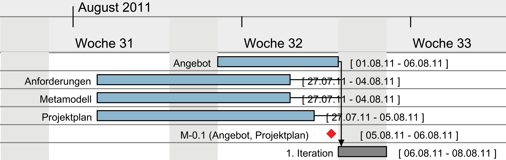
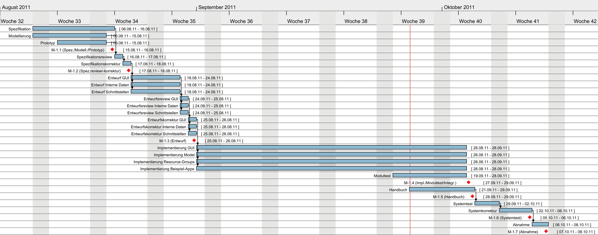
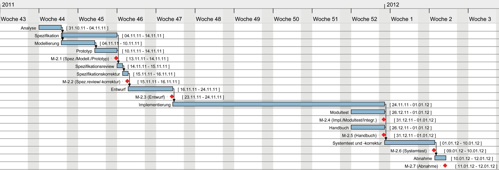

Versionsgeschichte des Dokuments
Version 3.0 (27.01.2012)
- Projektplan für 3. Iteration erweitert.
- Kapitel aktualisiert.
- Kapitel aktualisiert und einige Tabellen nach Iterationen aufgeteilt, sowie Überschriften erstellt.
Version 2.4 (16.01.2012)
- Kapitel aktualisiert.
- Kapitel aktualisiert.
- Kapitel aktualisiert.
Version 2.3 (18.12.2011)
- Kapitel aktualisiert.
- Änderungen in den Unterkapiteln des Kapitels vorgenommen. Aktualisierung des Terminplans, der Meilensteine, der Gantt-Diagramme und Arbeitspakete, sowie der tatsächliche Kosten- und Zeitentwicklung.
Version 2.2 (10.11.2011)
- Kapitel "Tulip" hinzugefügt.
- Kapitel aktualisiert.
- Kapitel aktualisiert.
- Kapitel aktualisiert.
- Kapitel aktualisiert.
Version 2.1 (24.10.2011)
- Kapitel aktualisiert.
- Kapitel aktualisiert.
Version 2.0 (18.10.2011)
- Kapitel aktualisiert.
- Kapitel aktualisiert.
- Kapitel aktualisiert.
- Kapitel aktualisiert.
- Kapitel aktualisiert.
Version 1.4 (06.10.2011)
- Kapitel aktualisiert.
Version 1.3 (21.09.2011)
- Änderungen in den Unterkapiteln des Kapitels vorgenommen. Aktualisierung des Terminplans, der Meilensteine, der Gantt-Diagramme und Arbeitspakete, sowie der tatsächliche Kosten- und Zeitentwicklung.
Version 1.2 (20.08.2011)
- Kapitel hinzugefügt.
- Kapitel an den Beginn des Dokuments verschoben.
- Kapitel hinzugefügt.
- Kapitel hinzugefügt.
Version 1.1 (12.08.2011)
- Spalte "Entwicklerstunden" der Tabelle im Kapitel hinzugefügt und Arbeitspakete bearbeitet.
Version 1.0 (04.08.2011)
- Projektplan überarbeitet. Dies ist die erste Version für den Kunden.
Version 0.4 (03.08.2011)
- Entwurfsreview und -korrektur in erster Iteration hinzugefügt.
Version 0.3 (02.08.2011)
- Gesamtkorrektur des Projektplans nach Review.
Version 0.2 (01.08.2011)
- Ausformulieren der Kapitel.
Version 0.1 (25.07.2011)
- Initiale Version nach der Vorlage aus LLSE10, S.115.
Einleitung
Zweck, Abgrenzung
Dieses Dokument stellt den Projektplan dar und beschreibt die Ziele des Projekts, sowie dessen genauen Ablauf. Die Zeit- und Personaleinteilung, die zu berücksichtigenden Bedingungen und denkbaren Risiken des Projekts werden hier festgehalten.
Der Entwicklungsprozess und die externen Meilensteine werden detailliert aufgelistet, sowie jede Phase der Entwicklung genau beschrieben.
Der Projektplan wird laufend aktualisiert, sodass neue Erkenntnisse oder Änderungen am Projekt unmittelbar dokumentiert werden. Jede durchgeführte Änderung wird in der Versionshistorie des Projektplans festgehalten.
Projektüberblick & Motivation
Die rasche Entwicklung in der Kommunikationsindustrie mit ihren unzähligen Möglichkeiten übersteigt die heutige Konfigurationssoftware. Nicht jeder kennt alle Anwendungen auf seinem Smartphone, ganz davon abgesehen welche Rechte die einzelnen Programme besitzen, ob diese auf den Internetanschluss zugreifen oder sogar Ihre E-Mails weiterleiten.
Im Rahmen des Studienprojekts "Privacy Management Platform" kurz "PMP" an der Universität Stuttgart wird eine Software entwickelt, die dem Benutzer das sichere Benutzen eines Android-Systems erlauben könnte.
Der Benutzer wird alle Apps und Ressourcen auf dem Android-System schnell und einfach verwalten können. Mittels einer ansprechenden grafischen Bedienungsoberfläche wird es möglich sein jeder einzelnen Anwendung, die mit PMP kompatibel ist, bestimmte Rechte zuzuweisen bzw. diese zu entziehen.
Leserkreis
Der Projektplan dient als zentrales Dokument für die folgenden Lesergruppen:
- den Entwicklern von PMP
- dem Kunden
- dem Betreuern des Studienprojekts
Konventionen
In diesem Dokument werden mehrere Konventionen verwendet, um knapp, übersichtlich, lesbar und treffend zu sein:
- Für Überbegriffe wie Benutzer oder Entwickler wird das generische Maskulinum verwendet. Da die Deutsche Sprache hier keine zufriedenstellende Alternative kennt, sind damit selbstverständlich auch alle weiblichen Leserinnen angesprochen.
- In diesem Dokument wird die deutsche Sprache verwendet; dabei ist allerdings zu beachten, dass sich übernommene oder übersetzte Begriffe aus dem Englischen nicht vermeiden lassen. Diese werden dann jedoch grammatikalisch an die Deutsche Sprache angepasst.
- Ein Verweis in diesem Dokument auf andere Kapitel wird so dargestellt:
- Die Versionsnummern sind nach dem Schema aufgebaut, dass zuerst die Iterationsnummer genannt wird und anschließend die Versionsnummer des Projektplans in dieser Iteration. "3.2" bezeichnet z.B. die 2. Version des Projektplans für die 3. Iteration.
Formale Grundlagen
Vertragliche Anforderungen an die Projektdurchführung
Die Abnahme durch den Kunden erfolgt spätestens zusammen mit dem Ende des Studienprojekts in der Kalenderwoche 21, 2012.
Der Kunde fordert ein iteratives Prozessmodell. Die Dauer pro Iteration beträgt ca. 2 Monate. Innerhalb einer Iteration wird das Wasserfallmodell angewendet, das im Kapitel detaillierter beschrieben wird.
Nach jeder Iteration werden dem Kunden die Zwischenergebnisse des Projekts vorgelegt.
Vertragliche Anforderungen an das Produkt
Die zur Implementierung verwendete Programmiersprache ist Java, die zugrunde gelegte Umgebung ist Android 2.1.1. Alle weiteren Versionen aufwärts (2.2, 2.3, 2.3.3) sollen ebenfalls unterstützt werden.
Die Universität Stuttgart erhält ein unbefristetes, unbegrenztes Nutzungsrecht für Forschung und Lehre für die Software.
Alle weiteren Anforderungen an das Produkt werden in der Spezifikation festgehalten.
Vertragliche Anforderungen an die Konformität mit Normen
Das Projektteam muss in der Implementierungsphase die Richtlinie "Code Convention for the Java Programming Language" einhalten. Es werden keine weitere Normen oder Richtlinien vom Kunden gefordert.
Leistungen der Vertragspartner
Lieferumfang (Software, Dienstleistungen, Dokumente)
- Angebot
- Projektplan
- Spezifikation mit Begriffslexikon und UI-Prototyp (nach Review und Korrektur)
- Ausführbare Software
- Implementierungen der Demonstrationsszenarien
- Systemtestprotokoll
- Handbuch
Resultate, die nicht zum Lieferumfang gehören
- Analysenotizen aus dem Kundengespräch
- Entwurf
- Testdaten
- Modultestplan und -protokoll
- Systemtestplan
- Kommunikationsdokumente (Redmine, E-Mails, usw.)
- Sonstige Organisationsdokumente
Leistungen des Auftraggebers
- Arbeitsräume mit Desktop-Computern
- Mehrere Android-Geräte
- Lizenz für Visual Paradigm
Externe Meilensteine
Externe Meilensteine sind ausschließlich eine Übersicht für den Kunden. Die detaillierte Planung der internen Meilensteine ist im Kapitel zu finden.
Die Nummer eines Meilensteins setzt sich aus der Nummer der Iteration und einer laufenden Nummer
der Meilensteine innerhalb einer Iteration zusammen. Die Vorprojektphase wird als 0. Iteration geführt.
M-2.3 bezeichnet beispielsweise den dritten Meilenstein in der zweiten Iteration.
Da ab der dritten Iteration sich das Gesamtprojekt in die vier Unterprojekte "PMP", "VHIKE", "APP3" und "EDITOR" aufteilt, werden diese Schlüsselworte den Meilensteinen vorangestellt.
| Nr. | Termin | Resultate für den Kunden |
|---|---|---|
| M-0.1 | 05.08.2011 | Angebotsdokument und Projektplan |
| M-1.2 | 20.08.2011 | Spezifikationsdokument |
| M-1.7 | 07.10.2011 | Software, Quellcode, Handbuch, Systemtestprotokoll |
| M-2.2 | 15.11.2011 | Spezifikationsdokument |
| M-2.7 | 12.01.2012 | Software, Quellcode, Handbuch, Systemtestprotokoll |
| PMP-M-3.2 | 31.01.2012 | Spezifikationsdokument |
| VHIKE-M-3.2 | 10.02.2012 | Software, Quellcode |
| PMP-M-3.7 | 05.03.2012 | Software, Quellcode, Handbuch, Systemtestprotokoll |
| VHIKE-M-3.5 | 05.03.2012 | Software, Quellcode |
| APP3-M-3.5 | 05.03.2012 | Spezifikationsdokument, Entwurf, Software, Quellcode |
| EDITOR-M-3.5 | 05.03.2012 | Software, Quellcode |
| M-4.2 | KW 11, 2012 | Spezifikationsdokument |
| M-4.7 | KW 14, 2012 | Software, Quellcode, Handbuch, Systemtestprotokoll |
Abnahmeprozedur
Alle Resultate werden vom Kunden geprüft und bestenfalls akzeptiert.
Sollte der Kunde mit den gelieferten Resultaten nicht einverstanden bzw. vertragliche Anforderungen nicht erfüllt worden sein, so wird das Projektteam die Resultate überarbeiten.
Änderungsverfahren
Sollte der Kunde Änderungswünsche während des Projekts äußern, werden diese umgesetzt. Voraussetzung dafür ist, dass es sich um geringfügige Änderungen handelt, die den zeitlichen Rahmen des Projekts nicht beeinflussen. Falls es sich um schwerwiegende Änderungen handelt, müssen sämtliche Dokumente angepasst bzw. neu erstellt werden.
Entwicklungsprozess
Strategie für die Entwicklung und Integration
Für die Entwicklung wird ein iterativer Prozess angestrebt. Dabei wird eine Iteration etwa 2 Monate lang dauern und einen präzise definierten Entwicklungsfortschritt des gesamten Systems umfassen. Innerhalb der Iteration wird dazu ein Wasserfallmodell angewandt, um innerhalb der kurzen Zeitspanne möglichst zügig und dynamisch entwickeln zu können. Dies bedeutet insbesondere, dass die Richtung gegen den normalen Fluss nur im Ausnahmefall beschritten wird und der klare Fokus auf der schnellen Durchführung des Wasserfalls liegen wird.
Um die Integration zu realisieren, soll das stetige Modell der "Continous Integration" eingesetzt werden.
Projektspezifische Abweichungen vom Standardprozess
Während der Analyse wird in keiner Iteration ein separates Analysedokument erstellt. Die Integration wird nicht als Phase des Wasserfallmodells verstanden, sondern kontinuierlich durchgeführt.
Phasen der Entwicklung
Die Entwicklung wird in mehrere Iterationen gegliedert, die klar abgegrenzte Phasen darstellen. Innerhalb einer Iteration werden folgende Phasen durchlaufen, wobei eine Phase durch den Wasserfallprozess unter Umständen mehrfach durchlaufen wird:
- Spezifikation, Modellierung & Prototyping
- Review & Korrektur der Spezifikation
- Entwurf & Walkthrough mit Korrektur
- Implementation & Modultest mit kontinuierlicher Integration
- Handbuch
- Systemtest
- Abnahme
Dokumentationsplan
Alle eigenständig entstehenden Dokumente werden einheitlich in HTML mit Kodierung UTF-8 verfasst, da dies sowohl einfach bearbeitbar als auch gut versionierbar ist. Dokumentation im Code soll durch JavaDoc-Kommentare gemäß den entsprechenden Richtlinien ununterbrochen stattfinden.
Prüfungen (Reviews, Walkthroughs und Tests)
In jeder Iteration wird ein Spezifikationsreview stattfinden, um die Fehler der Spezifikation besonders unter Kontrolle zu behalten, da diese sehr gravierende Auswirkungen haben können.
Da insbesondere auch im Entwurf das System wesentlich modelliert wird, findet in jeder Iteration ein Entwurfs-Walkthrough statt.
Im Laufe der Implementierung werden kontinuierlich Modultests entstehen, die nicht vom Kodierer des Moduls verfasst werden sollen. Dazu wird durch die kontinuierliche Integration auch ein weiterer stetiger Test stattfinden. Ein abschließender Systemtest wird in jeder Iteration stattfinden.
Risiken
Risiken und ihre Bewertung, Maßnahmen zur Reduktion und Notfallpläne
Personalausfall
Risiko
Ein oder mehrere Teammitglieder könnten im Laufe des Projekts für einen begrenzten Zeitraum oder für das restliche Projekt unerwartet ausfallen. Die Gründe hierfür können von Krankheit über Lustlosigkeit bis anderweitige Verpflichtungen reichen. Dies würde sich vermutlich auf die Produktivität niederschlagen, da keine Ersatzkapazitäten vorgesehen sind.
Bewertung
Dieses Risiko ist über die Projektdauer hinweg relativ wahrscheinlich, sollte in begrenzten Einzelfällen allerdings ohne schwerwiegende Folgen für das Projekt bleiben. Wird das Team über längere Zeiträume oder in beträchtlichem Maße dezimiert, so wären die Folgen für das Projekt gravierend.
Gegenmaßnahmen
- Ernennung eines stellvertretenden Projektleiters
- Großräumige Verteilung des Know-Hows dadurch, dass alle Teammitglieder in jeder Phase mitarbeiten.
Notfallpläne
Im Notfall sollte so früh wie möglich ein Betreuer über den Umstand informiert werden. Des Weiteren muss die weiterführende Planung überprüft und gegebenenfalls dem reduzierten Team angepasst werden.
Ausfall der Infrastruktur
Risiko
Die Technik, die zur Bereitstellung von Konfigurationsverwaltung und Projektverwaltung dient, könnte unerwartet komplett ausfallen. Dabei ist auch ein lokaler Datenverlust nicht ausgeschlossen.
Bewertung
An und für sich ist ein zeitlich begrenzter Ausfall über die Projektdauer äußerst wahrscheinlich. Einen schwerwiegenden Einfluss sollte dieser jedoch nicht haben, abhängig davon, ob Änderungen in Konfigurations- oder Projektverwaltung in dieser Zeitspanne getätigt werden sollten. Ein Datenverlust ist relativ unwahrscheinlich und wäre für sich genommen natürlich desaströs. Ein kompletter Datenverlust durch die getroffenen Gegenmaßnahmen ist sehr unwahrscheinlich.
Gegenmaßnahmen
- Backup des Repositorys sowohl indirekt bei jedem Teammitglied als auch bei Google Code
- Regelmäßige Backups der Redmine-Daten, teilweise Backups der Backups
- Keine Arbeitsbehinderung während Verbindungsausfällen durch Lokalität von Git
Notfallpläne
Fällt diese Infrastruktur unerwartet aus, so ist der Verantwortliche für die Konfigurationsverwaltung umgehend zu informieren, da dies auf lange Sicht den Projektfortschritt beeinträchtigt. Stellt dieser fest, dass ein schwerwiegender Datenverlust eingetreten ist, so wird er versuchen, die Backups einzuspielen. Sollten diese ebenfalls nicht zur Verfügung stehen, ist mit den Betreuern ein Krisenstab zu bilden.
Fehlende Kenntnisse
Risiko
Teammitglieder könnten durch fehlende Kenntnisse mit Werkzeugen oder Techniken ihre Arbeit stillschweigend unzureichend erfüllen, absichtlich korrumpieren oder unabsichtlich Probleme verursachen.
Bewertung
Prinzipiell ist kein Mensch unfehlbar, sodass eine mittlere Wahrscheinlichkeit für dieses Risiko besteht. Je nach Umfang der entstehenden Probleme und der Zeitdauer, bis sie aufgedeckt werden, steigt der Schaden für das Projekt. Praktisch sollte durch die Gegenmaßnahmen sowohl Wahrscheinlichkeit als auch Folgen für ein signifikantes Problem stark reduziert werden.
Gegenmaßnahmen
- starke Ermunterung zur gemeinschaftlichen Zusammenarbeit
- fortlaufende Ermunterung, bei Problemen Experten in oder außerhalb des Teams zu Rate zu ziehen
- Einsatz eines Versionierungssystem
- Einsatz eines Qualitätssicherungsbeauftragten
- Motivation, bei guter Leistung eine "Google-Exkursion" besuchen zu dürfen
- alle Teammitglieder sind projektbedingt Softwaretechnik-Studenten und sollten Wissen um dieses Risiko besitzen
Notfallpläne
Beim Auftreten eines schwerwiegenden Problems ist abzuklären, ob dies absichtlich oder fahrlässig in Kauf genommen wurde. Ist dies der Fall, sollte der Betroffene auf dieses Verhalten angesprochen werden. Es sollte ihm die Möglichkeit gegeben werden, die fehlenden Kenntnisse zu erlernen, soweit der Zeitplan dies zulässt, z.B. durch Team Programming oder Zusammenarbeit mit einem Experten. Ändert sich seine Haltung dann jedoch immer noch nicht, sind entsprechende Kontrollmechanismen der Resultate (zum Beispiel eigener Branch, Review) einzuführen.
Fehlende Stabilität der Anforderungen
Risiko
Der Kunde wird mit Sicherheit seine Anforderungen im Laufe des Projekts ändern. Allerdings besteht das Risiko, dass er dies in einem Ausmaß tut, der die Entwicklung stark behindert. Ändert sich zum Beispiel bei jeder Absprache die Grundstruktur des Systems kann ein zügiger Projektfortschritt nicht mehr gewährleistet werden.
Bewertung
Dieses Risiko ist als geringfügig wahrscheinlich einzuschätzen, wobei seine Folgen überdurchschnittlich Probleme verursachen können, insbesondere wenn gravierende Zeitaufwände notwendig werden, um die Änderungen einzupflegen.
Gegenmaßnahmen
- Das Projekt ist ein Studienprojekt, fortlaufende großräumige Anforderungsänderungen sind nicht zu erwarten.
- Der Kunde hat selbst Softwaretechnik studiert und kennt die Problematik.
Notfallpläne
Sollten wider Erwarten ununterbrochen schwerwiegende Anforderungsänderungen auftreten, die mit dem Kunden nicht neuverhandelt werden können, so ist mit den Betreuern und gegebenfalls mit der Abteilung Software Engineering abzuklären, ob und wie weit diese im Rahmen eines Studienprojektes sinnvoll sind.
Fehlende Motivation
Risiko
Teammitglieder könnten durch eine prinzipiell unbegrenzte Anzahl von möglichen Gründen die Motivation an der Mitarbeit des Projektes verlieren und zeitlich oder andauernd unzufriedenstellende Resultate liefern.
Bewertung
Dieses Risiko ist relativ wahrscheinlich, da die Teammitglieder keinen bezahlten Arbeitsvertrag eingehen. Je nach Umfang der entstehenden Verzögerung und der Zeitdauer, bis sie aufgedeckt werden, steigt der Schaden für das Projekt. Dabei sollte dies in begrenzten Einzelfällen allerdings ohne schwerwiegende Folgen für das Projekt bleiben. Wird das Team allerdings über längere Zeiträume oder in beträchtlichem Maße dezimiert, so wären die Folgen für das Projekt gravierend. Dieses Risiko ist insbesondere gefährlich, da es sich bei den Teammitgliedern unerkannt bis zu einem spontanen Haltungsumschwung entwickeln kann.
Gegenmaßnahmen
- starke Ermunterung zur gemeinschaftlichen Zusammenarbeit
- Motivation, bei guter Leistung eine "Google-Exkursion" besuchen zu dürfen
- engagierte Projektorganisation
Notfallpläne
Fällt auf, dass die Motivation bei einem Großteil der Teammitglieder abzunehmen scheint, sollten geeignete Belohnungen oder Anpassung der Aufgaben bzw. der Zeiten stattfinden. Findet eine Ausblendung gewisser Teammitglieder statt, so sind diese darauf anzusprechen und bei Überbelastung ist eine Kompromisslösung anzustreben. Schlägt auch diese oder generell die Kommunikationsversuche zu diesem Teammitglied fehl, so sind die Betreuer zu informieren.
Schlechte Beziehung zum Kunden
Risiko
Es besteht die Möglichkeit, dass sich eine schlechte Beziehung zum Kunden entwickelt, die durch Kompromisslosigkeit, schlechter Kommunikation und fahrlässig fehlenden Absprachen gekennzeichnet ist.
Bewertung
Das Risiko ist auf Grund der Gegenmaßnahmen als geringfügig wahrscheinlich einzustufen. Da in diesem Fall dem Kunden (als Abteilung) auch eine gewisse Prüfaufgabe zukommt, sind die Auswirkungen des Risikos über das Projekt hinaus nicht absehbar. Prinzipiell ist das Risiko äußerst variabel und kann sowohl minderschwere als auch gravierende Probleme verursachen, wie z.B. komplett neben den Anforderungen vorbei zu entwickeln.
Gegenmaßnahmen
- schriftliches Festhalten der Kommunikationskanäle
- der Kunde hat selbst Softwaretechnik studiert und kennt das Risiko
Notfallpläne
Sollte sich wider Erwarten eine derartige Situation einstellen, ist der Fortgang des Projekts äußerst ungewiss. Es wäre dann notwendig mit den Betreuern und gegebenenfalls der Abteilung SE eine allseits verträgliche Lösung zur Abwicklung des Projekts zu finden, ansonsten besteht eine vergleichsweise hohe Wahrscheinlichkeit, dass das Projekt scheitern wird.
Richtlinien für die Entwicklung
Konfigurationsmanagement
Zur Konfigurationsverwaltung wird Git in Verbindung mit Redmine eingesetzt. Als verteiltes Versionskontrollsystem hat Git zahlreiche Vorteile gegenüber "normalen" Versionierungssystemen, wie beispielsweise die Ausrichtung auf häufige Merges, die beliebige Integrationsstrategie und die Lokalität der Änderungen. Damit steht zusätzlich zum Google Code Repository, das ständig unseren Fortschritt als Backup spiegelt, auf jedem Rechner, der das Repository hat, ein funktionstüchtiges Backup zur Verfügung. Damit ist Git auch außerordentlich schnell und klein. Da ein Großteil der Organisationsstruktur bereits gut mit Redmine vertraut ist, wird dieses als Ticket- und Zeiterfassungswerkzeug eingesetzt.
Design- und Programmierrichtlinien
Das Projektteam hält beim Implementieren des Java-Codes die "Code Convention for the Java Programming Language" ein. Die Dokumentation wird in HTML mit der Kodierung UTF-8 verfasst. Alle Zeilenumbrüche sollen zur Kompatibilität im Linux-Stil stattfinden.
Einsatz von Werkzeugen
- Eclipse Indigo IDE zur Entwicklung des Java-Codes
- Git zur Konfigurationsverwaltung
- Redmine als Projektverwaltung und Kommunikationsplattform (Ticketsystem, Zeiterfassung, New, Wiki, Forum)
- Beliebiger HTML Editor zur Erstellung der Dokumente: Spezifikation, Projektplan, Benutzerhandbuch, Begriffslexikon, usw.
- Justus für die Systemtestverwaltung
- JUnit zur Durchführung der Modultests
- RevAger zur Durchführung und Dokumentation der Reviews
- Visual Paradigm zur Modellierung (Use-Case-Diagramme, Klassendiagramm, usw.)
- Tulip zur Modellierung von Use-Cases und Usability Pattern
- CodeCover zur Testüberdeckung (Glass-Box-Test)
- Gantt Project zur Erstellung von Gantt-Diagrammen
- JavaDoc zur Kommentierung des Java-Codes
Anforderungen an die Umgebung
Infrastruktur (Büros, Rechnersysteme, Software)
Das Projektteam arbeitet sowohl in den von der Abteilung IPVS (Institut für parallele und verteilte Systeme) zur Verfügung gestellten Räumlichkeiten (Abteilungspool und Nexus-Labor), den HS-/GS-Rechnerpools der Universität Stuttgart, sowie an privaten Arbeitsplätzen.
Es werden folgende Rechnersysteme genutzt:- Private Notebooks und Desktop-Computer
- Desktop-Computer der HS-/GS-Rechnerpools der Universität Stuttgart
- Desktop-Computer in den Räumlichkeiten der Abteilung IPVS
Das Projektteam verwendet einige Softwarewerkzeuge zur Durchführung des Projekts.
Diese sind in detailliert aufgeführt.
Projektorganisation
Schnittstelle zum Auftraggeber
Der erste Ansprechpartner für den Auftraggeber ist der . Sollte dieser in Ausnahmefällen nicht verfügbar sein, so tritt der an seine Stelle.
Die Kommunikation seitens des Projektteams erfolgt stets durch den Projektleiter. Dieser tritt in direkte Kommunikation mit dem Kunden.
Schnittstelle zur eigenen Organisation
Für alle organisatorische Belange, allgemeinen Anfragen und schwerwiegende bzw.
grundlegende Entscheidungen ist der verantwortlich.
Ist der Projektleiter nicht verfügbar, wird er durch den vertreten.
Für einzelne Arbeitspakete sind verschiedene Projektmitarbeiter verantwortlich. Diese sind in differenziert aufgeführt.
Schlüsselpersonen
Prüfer
| Name: | Prof. Dr.-Ing. habil. Bernhard Mitschang Universitätsstraße 38, Raum 2.357 D-70569 Stuttgart |
|---|---|
| E-Mail: | Bernhard.Mitschang@ipvs.uni-stuttgart.de |
Kunde (bis 31.12.2011)
| Name: | Dipl.-Inf. Andreas Brodt Universitätsstraße 38, Raum 2.356 D-70569 Stuttgart |
|---|---|
| E-Mail: | Andreas.Brodt@ipvs.uni-stuttgart.de |
Kunde (ab 01.01.2012)
| Name: | Dipl.-Inf. Christoph Stach Universitätsstraße 38, Raum 2.360 D-70569 Stuttgart |
|---|---|
| E-Mail: | Christoph.Stach@ipvs.uni-stuttgart.de |
Betreuer
| Name: | Dipl.-Inf. Christoph Stach Universitätsstraße 38, Raum 2.360 D-70569 Stuttgart |
|---|---|
| E-Mail: | Christoph.Stach@ipvs.uni-stuttgart.de |
| Name: | Dipl.-Inf. Nazario Cipriani Universitätsstraße 38, Raum 2.356 D-70569 Stuttgart |
|---|---|
| E-Mail: | Nazario.Cipriani@ipvs.uni-stuttgart.de |
| Name: | Dipl.-Inf. Carlos Lübbe Universitätsstraße 38, Raum 2.360 D-70569 Stuttgart |
|---|---|
| E-Mail: | Carlos.Luebbe@ipvs.uni-stuttgart.de |
Projektleiter
| Name: | Marcus Vetter Narzissenstraße 29 D-70771 Leinfelden-Echterdingen |
|---|---|
| E-Mail: | vetterms@studi.informatik.uni-stutgart.de |
Stellv. Projektleiter, Qualitätssicherungsbeauftragter, Konfigurationsmanager, Protokollant
| Name: | Jakob Jarosch Laubengasse 7 D-72664 Kohlberg |
|---|---|
| E-Mail: | jaroscjb@studi.informatik.uni-stuttgart.de |
Projektteam
| Name | |
|---|---|
| Berberich, Thorsten | swt77178@studmail.uni-stuttgart.de |
| Huynh, Hai Dang | huynhhi@studi.informatik.uni-stuttgart.de |
| Jarosch, Jakob | jaroscjb@studi.informatik.uni-stuttgart.de |
| Kuhn, Tobias | kuhnts@studi.informatik.uni-stuttgart.de |
| Makarov, Anton | makaroan@studi.informatik.uni-stuttgart.de |
| Nguyen, Andre Bach | swt77060@stud.uni-stuttgart.de |
| Schüler, Frieder | schuelfr@studi.informatik.uni-stuttgart.de |
| Strobel, Patrick | strobepk@studi.informatik.uni-stuttgart.de |
| Vetter, Marcus | swt75342@stud.uni-stuttgart.de |
| Wassiljew, Alexander | wassilar@studi.informatik.uni-stuttgart.de |
Berichtwesen
Internes Berichtwesen und Kommunikation
Da das Berichtwesen eine zentrale und sehr wichtige Rolle einnimmt,
verwendet das Projektteam für die Berichterstattung die umfangreiche Plattform Redmine.
Mithilfe dieser Plattform stehen dem Projektteam ein Wiki, ein Newssystem und ein Forum zur differenzierten
Kommunikation zur Verfügung.
Das Wiki wird hauptsächlich zur dauerhaften Informationssammlung verwendet,
sodass hier wichtige Links zu projektrelevanten Internetseiten, Links zu Programmierrichtlinien,
aber auch Installationsanleitungen oder Ähnliches zugänglich gemacht werden können.
Das Newssystem wird vom Projektleiter und stellvertretenden Projektleiter genutzt,
um wichtige Neuigkeiten dem Projektteam mitzuteilen.
Um Fragen der Projektmitarbeiter effizient beantworten zu können, sowie diese Information zugleich anderen Projektmitarbeitern
zugänglich zu machen, wird das in Redmine integrierte Forum genutzt.
Weiterhin wird im Ticketsystem der Redmine-Plattform die Aufgabenverteilung durchgeführt.
Tickets werden Projektmitarbeitern zugewiesen und einem bestimmten Meilenstein zugeordnet, sodass für alle Projektmitarbeiter
die noch zu erledigenden Aufgaben ersichtlich sind.
Die Arbeitszeiterfassung wird ebenfalls mit Hilfe der Redmine-Plattform durchgeführt.
Eintragungen werden wenn möglich auf Tickets referenziert und zusätzlich mit Kommentaren zur durchgeführten Tätigkeit versehen.
Ergänzt wird die Redmine-Plattform für die Berichterstattung durch wöchentliche Meetings des gesamten Projektteams.
Die hierbei erstellten Protokolle werden ebenfalls auf der Redmine-Plattform jedem Projektmitarbeiter zugänglich gemacht.
Externes Berichtwesen, Activity Reports
Damit die kontinuierlich über den Projektfortschritt informiert sind,
verfasst der Projektleiter zweiwöchentlich einen kurzen Projektbericht über die bisher erreichten Ziele und der anstehenden durchzuführenden Schritte.
Diesem Bericht wird die kommentierte Arbeitszeiterfassung der einzelnen Projektmitarbeiter beigefügt.
Zusätzlich werden von jedem Projektmitarbeiter insgesamt drei Activity Reports verfasst. Jeder Activity Report enthält eine Beschreibung der erbrachten Tätigkeit,
bei der der Projektmitarbeiter mitgearbeitet hat und gegebenfalls verantwortlich war, was momentan geplant ist und welche Ziele als nächstes erreicht werden sollen.
Der erste Activity Report ist zu Beginn des Projekts, der zweite nach ca. sechs Monaten und der dritte kurz vor Projektende zu erstellen.
Ergänzend hierzu findet kurz nach der jeweiligen Abgabe der Activity Reports ein Gespräch mit den Beteuern statt.
Hier werden der aktuelle Projektstand, die noch zu erreichenden Ziele und die Empfindung des einzelnen Projektmitarbeiters
im Team und im Projekt besprochen. Während des Gesprächs wird ein Protokoll erstellt.
Entwicklungsplan
Meilenstein- und Terminplanung
Meilensteinplanung
Die Nummer eines Meilensteins setzt sich aus der Nummer der Iteration und einer laufenden Nummer
der Meilensteine innerhalb einer Iteration zusammen. Die Vorprojektphase wird als 0. Iteration geführt.
M-2.3 bezeichnet beispielsweise den dritten Meilenstein in der zweiten Iteration.
Vorprojekt
| Nr. | Termin | Name des Meilensteins | Verantwortlicher Mitarbeiter |
|---|---|---|---|
| M-0.1 | 05.08.2011 | Angebot, Projektplan | Marcus Vetter |
Iteration 1
| Nr. | Termin | Name des Meilensteins | Verantwortlicher Mitarbeiter |
|---|---|---|---|
| M-1.1 | 16.08.2011 | Spezifikation, Modellierung, Prototyp | Frieder Schüler |
| M-1.2 | 18.08.2011 | Spezifikationsreview/-korrektur | Frieder Schüler |
| M-1.3 | 26.08.2011 | Entwurf |
Anton Makarov (GUI) Andre Bach Nguyen (Interne Daten) Hai Dang Huynh (Schnittstellen) |
| M-1.4 | 27.09.2011 | Implementierung, Modultest, Integration |
Alexander Wassiljew (GUI) Andre Bach Nguyen (Model) Tobias Kuhn (Resource-Groups) Thorsten Berberich (Beispiel-Apps) |
| M-1.5 | 28.09.2011 | Handbuch | Patrick Strobel |
| M-1.6 | 05.10.2011 | Systemtest/-korrektur | Tobias Kuhn |
| M-1.7 | 07.10.2011 | Abnahme | Marcus Vetter |
Iteration 2
| Nr. | Termin | Name des Meilensteins | Verantwortlicher Mitarbeiter |
|---|---|---|---|
| M-2.1 | 13.11.2011 | Spezifikation, Modellierung, GUI-Prototyp | Frieder Schüler (Spezifikation) Thorsten Berberich (Modellierung) Andre Bach Nguyen (GUI-Prototyp) |
| M-2.2 | 15.11.2011 | Spezifikationsreview/-korrektur | Frieder Schüler |
| M-2.3 | 23.11.2011 | Entwurf | Jakob Jarosch (PMP-GUI) Tobias Kuhn (PMP-Model) Alexander Wassiljew (vHike) |
| M-2.4 | 31.12.2011 | Implementierung, Modultest, Integration | Jakob Jarosch (Impl. PMP-GUI) Tobias Kuhn (Impl. PMP-Model) Alexander Wassiljew (Impl. vHike) Andre Bach Nguyen (Modultest) |
| M-2.5 | 15.01.2012 | Handbuch | Patrick Strobel |
| M-2.6 | 15.01.2012 | Systemtest/-korrektur | Tobias Kuhn |
| M-2.7 | 17.01.2012 | Abnahme | Marcus Vetter |
Iteration 3
| Nr. | Termin | Name des Meilensteins | Verantwortlicher Mitarbeiter |
|---|---|---|---|
| PMP-M-3.1 | 30.01.2012 | Spezifikation, Modellierung, Prototyp | Jakob Jarosch |
| PMP-M-3.2 | 31.01.2012 | Spezifikationsreview/-korrektur | Marcus Vetter |
| PMP-M-3.3 | 03.02.2012 | Entwurf | Tobias Kuhn |
| PMP-M-3.4 | 24.02.2012 | Implementierung, Modultest | Tobias Kuhn |
| PMP-M-3.5 | 24.02.2012 | Handbuch | Tobias Kuhn |
| PMP-M-3.6 | 02.03.2012 | Systemtest/-korrektur | Jakob Jarosch |
| PMP-M-3.7 | 05.03.2012 | Abnahme | Marcus Vetter |
| VHIKE-M-3.1 | 27.01.2012 | Spezifikation | ? |
| VHIKE-M-3.2 | 10.02.2012 | Implementierung, Abnahme | ? |
| VHIKE-M-3.3 | 24.02.2012 | Anbindung an PMP | ? |
| VHIKE-M-3.4 | 02.03.2012 | Systemtest/-korrektur | ? |
| VHIKE-M-3.5 | 05.03.2012 | Abnahme | ? |
| APP3-M-3.1 | 01.02.2012 | Spezifikation | ? |
| APP3-M-3.2 | 02.02.2012 | Spezifikationsreview/-korrektur | ? |
| APP3-M-3.3 | 08.02.2012 | Entwurf | ? |
| APP3-M-3.4 | 02.03.2012 | Implementierung | ? |
| APP3-M-3.5 | 05.02.2012 | Abnahme | ? |
| EDITOR-M-3.1 | 30.01.2012 | Spezifikation | Patrick Strobel |
| EDITOR-M-3.2 | 31.01.2012 | Spezifikationsreview/-korrektur | Thorsten Berberich |
| EDITOR-M-3.3 | 03.02.2012 | Entwurf | Patrick Strobel |
| EDITOR-M-3.4 | 24.02.2012 | Implementierung | Thorsten Berberich |
| EDITOR-M-3.5 | 02.03.2012 | Systemtest/-korrektur | Patrick Strobel |
| EDITOR-M-3.6 | 05.03.2012 | Abnahme | Thorsten Berberich |
Terminplanung, Gantt-Diagramm
Vorprojekt
{kind=link}
Iteration 1
{kind=link}
Iteration 2
{kind=link}
Projektstrukturplan und Verantwortlichkeiten
Iteration 1
| Projekt | Arbeitspaket | Verantwortlicher Mitarbeiter | Resultate | Aufwand | Meilenstein- Zuordnung |
|---|---|---|---|---|---|
| PMP | Analyse & Spezifikation | Frieder Schüler und Tobias Kuhn (stellv.) |
|
30 Std. | M-1.1 |
| PMP | GUI-Prototyp | Anton Makarov |
|
25 Std. | M-1.1 |
| PMP | Modellierung | Thorsten Berberich |
|
40 Std. | M-1.1 |
| PMP | Spezifikationsreview | Marcus Vetter |
|
28 Std. | M-1.2 |
| PMP | Spezifikationskorrektur | Frieder Schüler |
|
6 Std. | M-1.2 |
| PMP | Entwurf (Graphische Benutzeroberfläche) | Anton Makarov |
|
15 Std. | M-1.3 |
| PMP | Entwurf (Interne Daten) | Andre Bach Nguyen |
|
30 Std. | M-1.3 |
| PMP | Entwurf (Schnittstellen) | Hai Dang Huynh |
|
32 Std. | M-1.3 |
| PMP | Entwurfs-Walkthrough | Jakob Jarosch |
|
30 Std. | M-1.3 |
| PMP | Entwurfskorrektur (Graphische Benutzeroberfläche) | Anton Makarov |
|
3 Std. | M-1.3 |
| PMP | Entwurfskorrektur (Interne Daten) | Andre Bach Nguyen |
|
3 Std. | M-1.3 |
| PMP | Entwurfskorrektur (Schnittstellen) | Hai Dang Huynh |
|
3 Std. | M-1.3 |
| PMP | Implementierung (Graphische Benutzeroberfläche) | Alexander Wassiljew |
|
80 Std. | M-1.4 |
| PMP | Implementierung (Model) | Andre Bach Nguyen |
|
100 Std. | M-1.4 |
| PMP | Implementierung (Resource-Groups) | Tobias Kuhn |
|
150 Std. | M-1.4 |
| PMP | Implementierung (Beispiel-Apps) | Thorsten Berberich |
|
110 Std. | M-1.4 |
| PMP | Modultests | Andre Bach Nguyen |
|
80 Std. | M-1.4 |
| PMP | Handbuch | Patrick Strobel |
|
25,5 Std. | M-1.5 |
| PMP | Systemtest/-korrektur | Tobias Kuhn und Frieder Schüler (stellv.) |
|
51 Std. | M-1.6 |
| PMP | Abnahme | Marcus Vetter |
|
8,5 Std. | M-1.7 |
Iteration 2
| Projekt | Arbeitspaket | Verantwortlicher Mitarbeiter | Resultate | Aufwand | Meilenstein- Zuordnung |
|---|---|---|---|---|---|
| PMP | Analyse & Spezifikation | Frieder Schüler |
|
25 Std. | M-2.1 |
| PMP | Modellierung | Thorsten Berberich |
|
38 Std. | M-2.1 |
| PMP | GUI-Prototyp | Andre Bach Nguyen |
|
25 Std. | M-2.1 |
| PMP | Spezifikationsreview | Marcus Vetter |
|
30 Std. | M-2.2 |
| PMP | Spezifikationskorrektur | Frieder Schüler |
|
14 Std. | M-2.2 |
| PMP | Entwurf | Tobias Kuhn (Model) und Jakob Jarosch (GUI) |
|
110 Std. | M-2.3 |
| VHIKE | Entwurf | Alexander Wassiljew und Hai Dang Huynh (stellv.) |
|
110 Std. | M-2.3 |
| PMP | Implementierung | Tobias Kuhn (Model) und Jakob Jarosch (GUI) |
|
240 Std. | M-2.4 |
| VHIKE | Implementierung | Alexander Wassiljew und Hai Dang Huynh (stellv.) |
|
310 Std. | M-2.4 |
| PMP | Modultests | Andre Bach Nguyen |
|
88 Std. | M-2.4 |
| PMP | Handbuch | Patrick Strobel |
|
22 Std. | M-2.5 |
| PMP | Systemtest/-korrektur | Marcus Vetter |
|
66 Std. | M-2.6 |
| PMP | Abnahme | Marcus Vetter |
|
22 Std. | M-2.7 |
Iteration 3
| Projekt | Arbeitspaket | Verantwort- licher Mitarbeiter | Resultate | Aufwand | Meilenstein- Zuordnung |
|---|---|---|---|---|---|
| PMP | Analyse & Spezifikation | Marcus Vetter |
|
12 Std. | PMP-M-3.1 |
| PMP | Modellierung | Tobias Kuhn |
|
12 Std. | PMP-M-3.1 |
| PMP | GUI-Prototyp | Jakob Jarosch |
|
12 Std. | PMP-M-3.1 |
| PMP | Spezifikationsreview | Marcus Vetter |
|
12 Std. | PMP-M-3.2 |
| PMP | Spezifikationskorrektur | Tobias Kuhn |
|
6 Std. | PMP-M-3.2 |
| PMP | Entwurf | Tobias Kuhn |
|
45 Std. | PMP-M-3.3 |
| PMP | Implementierung | Tobias Kuhn (Model) und Jakob Jarosch (GUI) |
|
250 Std. | PMP-M-3.4 |
| PMP | Modultests | Marcus Vetter |
|
56 Std. | PMP-M-3.4 |
| PMP | Handbuch | Tobias Kuhn |
|
9 Std. | PMP-M-3.5 |
| PMP | Systemtest/-korrektur | Jakob Jarosch |
|
27 Std. | PMP-M-3.6 |
| PMP | Abnahme | Marcus Vetter |
|
9 Std. | PMP-M-3.7 |
| VHIKE | Spezifikation | Alexander Wassiljew |
|
27 Std. | VHIKE-M-3.1 |
| VHIKE | Implementierung, Abnahme | Andre Nguyen |
|
207 Std. | VHIKE-M-3.2 |
| VHIKE | Anbindung an PMP | Hai Dang Huynh |
|
180 Std. | VHIKE-M-3.3 |
| VHIKE | Systemtest/-korrektur | Andre Nyugen |
|
27 Std. | VHIKE-M-3.4 |
| VHIKE | Abnahme | Alexander Wassiljew |
|
9 Std. | VHIKE-M-3.5 |
| APP3 | Spezifikation | Anton Makarov |
|
24 Std. | APP3-M-3.1 |
| APP3 | Spezifikationsreview/-korrektur | Frieder Schüler |
|
18 Std. | APP3-M-3.2 |
| APP3 | Entwurf | Anton Makarov |
|
48 Std. | APP3-M-3.3 |
| APP3 | Implementierung | Frieder Schüler |
|
204 Std. | APP3-M-3.4 |
| APP3 | Abnahme | Anton Makarov |
|
6 Std. | APP3-M-3.5 |
| EDITOR | Spezifikation | Patrick Strobel |
|
24 Std. | EDITOR-M-3.1 |
| EDITOR | Spezifikationsreview/-korrektur | Thorsten Berberich |
|
12 Std. | EDITOR-M-3.2 |
| EDITOR | Entwurf | Patrick Strobel |
|
24 Std. | EDITOR-M-3.3 |
| EDITOR | Implementierung | Thorsten Berberich |
|
216 Std. | EDITOR-M-3.4 |
| EDITOR | Systemtest/-korrektur | Patrick Strobel |
|
18 Std. | EDITOR-M-3.5 |
| EDITOR | Abnahme | Thorsten Berberich |
|
6 Std. | EDITOR-M-3.6 |
Aufwands- und Kostenplanung
Für das Projekt, aufgeteilt in vier Iterationen, sind insgesamt 10 Entwickler á 450 Arbeitsstunden vorgesehen.
Zusammen ergibt das einen Gesamtaufwand von 4.500 Entwicklerstunden. Eine Entwicklerstunde wird mit € 100,- berechnet.
Daraus folgen die Gesamtkosten in Höhe von € 450.000,-.
Aufteilung der Gesamtkosten auf die Iterationen
| Phase | Aufwand | Kosten |
|---|---|---|
| Vorprojekt | 250 Std. | € 25.000,- |
| Iteration 1 | 850 Std. | € 85.000,- |
| Iteration 2 | 1100 Std. | € 110.000,- |
| Iteration 3 | 1500 Std. | € 150.000,- |
| Iteration 4 | 800 Std. | € 80.000,- |
Geschätzter Arbeitsanteil der Meilensteine
Vorprojekt
| Nr. | Name des Meilensteins | Arbeitsanteil | Entwicklerstunden | Kosten |
|---|---|---|---|---|
| M-0.1 | Angebot, Projektplan | 100% | 250 Std. | € 25.000,- |
| Summe: | 100% | 250 Std. | € 25.000,- | |
Iteration 1
| Nr. | Name des Meilensteins | Arbeitsanteil | Entwicklerstunden | Kosten |
|---|---|---|---|---|
| M-1.1 | Spezifikation, Modellierung, Prototyp | 11% | 93,5 Std. | € 9.350,- |
| M-1.2 | Spezifikationsreview/-korrektur | 4% | 34 Std. | € 3.400,- |
| M-1.3 | Entwurf | 14% | 119 Std. | € 11.900,- |
| M-1.4 | Implementierung, Modultest, Integration | 61% | 518,5 Std. | € 51.850,- |
| M-1.5 | Handbuch | 3% | 25,5 Std. | € 2.550,- |
| M-1.6 | Systemtest/-korrektur | 6% | 51 Std. | € 5.100,- |
| M-1.7 | Abnahme | 1% | 8,5 Std. | € 850,- |
| Summe: | 100% | 850 Std. | € 85.000,- | |
Iteration 2
| Nr. | Name des Meilensteins | Arbeitsanteil | Entwicklerstunden | Kosten |
|---|---|---|---|---|
| M-2.1 | Spezifikation, Modellierung, Prototyp | 8% | 88 Std. | € 8.800,- |
| M-2.2 | Spezifikationsreview/-korrektur | 4% | 44 Std. | € 4.400,- |
| M-2.3 | Entwurf | 20% | 220 Std. | € 22.000,- |
| M-2.4 | Implementierung, Modultest, Integration | 58% | 638 Std. | € 63.800,- |
| M-2.5 | Handbuch | 2% | 22 Std. | € 2.200,- |
| M-2.6 | Systemtest/-korrektur | 6% | 66 Std. | € 6.600,- |
| M-2.7 | Abnahme | 2% | 22 Std. | € 2.200,- |
| Summe: | 100% | 1100 Std. | € 110.000,- | |
Iteration 3
| Nr. | Name des Meilensteins | Arbeitsanteil | Entwicklerstunden | Kosten |
|---|---|---|---|---|
| PMP-M-3.1 | Spezifikation, Modellierung, Prototyp | 8% | 36 Std. | € 3.600,- |
| PMP-M-3.2 | Spezifikationsreview/-korrektur | 4% | 18 Std. | € 1.800,- |
| PMP-M-3.3 | Entwurf | 10% | 45 Std. | € 4.500,- |
| PMP-M-3.4 | Implementierung, Modultest, Integration | 68% | 306 Std. | € 30.600,- |
| PMP-M-3.5 | Handbuch | 2% | 9 Std. | € 900,- |
| PMP-M-3.6 | Systemtest/-korrektur | 6% | 27 Std. | € 2.700,- |
| PMP-M-3.7 | Abnahme | 2% | 9 Std. | € 900,- |
| Zwischensumme: | 100% | 450 Std. | € 45.000,- | |
| VHIKE-M-3.1 | Spezifikation | 6% | 27 Std. | € 2.700,- |
| VHIKE-M-3.2 | Implementierung, Abnahme | 46% | 207 Std. | € 20.700,- |
| VHIKE-M-3.3 | Anbindung an PMP | 40% | 180 Std. | € 18.000,- |
| VHIKE-M-3.4 | Systemtest/-korrektur | 6% | 27 Std. | € 2.700,- |
| VHIKE-M-3.5 | Abnahme | 2% | 9 Std. | € 900,- |
| Zwischensumme: | 100% | 450 Std. | € 45.000,- | |
| APP3-M-3.1 | Spezifikation | 8% | 24 Std. | € 2.400,- |
| APP3-M-3.2 | Spezifikationsreview/-korrektur | 6% | 18 Std. | € 1.800,- |
| APP3-M-3.3 | Entwurf | 16% | 48 Std. | € 4.800,- |
| APP3-M-3.4 | Implementierung | 68% | 204 Std. | € 20.400,- |
| APP3-M-3.5 | Abnahme | 2% | 6 Std. | € 600,- |
| Zwischensumme: | 100% | 300 Std. | € 30.000,- | |
| EDITOR-M-3.1 | Spezifikation | 8% | 24 Std. | € 2.400,- |
| EDITOR-M-3.2 | Spezifikationsreview/-korrektur | 4% | 12 Std. | € 1.200,- |
| EDITOR-M-3.3 | Entwurf | 8% | 24 Std. | € 2.400,- |
| EDITOR-M-3.4 | Implementierung | 72% | 216 Std. | € 21.600,- |
| EDITOR-M-3.5 | Systemtest/-korrektur | 6% | 18 Std. | € 1.800,- |
| EDITOR-M-3.6 | Abnahme | 2% | 6 Std. | € 600,- |
| Zwischensumme: | 100% | 300 Std. | € 30.000,- | |
| Summe: | 100% | 1500 Std. | € 150.000,- | |
Tatsächliche Aufwands- und Kostenentwicklung
Die folgenden Tabellen vergleichen die geplante und tatsächliche Aufwands- und Kostenentwicklung.
Stand 26.01.2012.
Gesamtkosten
| Geschätzt | Tatsächlich | |||
|---|---|---|---|---|
| Phase | Aufwand | Kosten | Aufwand | Kosten |
| Vorprojekt | 250 Std. | € 25.000,- | 162 Std. | € 16.200,- |
| Iteration 1 | 850 Std. | € 85.000,- | 902 Std. | € 90.200,- |
| Iteration 2 | 1100 Std. | € 110.000,- | 957 Std. | € 95.700,- |
| Summe: | 2200 Std. | € 220.000,- | 2021 Std. | € 202.100,- |
Kosten aufgeteilt nach Iterationen
Vorprojekt
| Geschätzt | Tatsächlich | ||||
|---|---|---|---|---|---|
| Nr. | Name des Meilensteins | Aufwand | Kosten | Aufwand | Kosten |
| M-0.1 | Angebot, Projektplan | 250 Std. | € 25.000,- | 162 Std. | € 16.200,- |
| Summe: | 250 Std. | € 25.000,- | 162 Std. | € 16.200,- | |
Iteration 1
| Geschätzt | Tatsächlich | ||||
|---|---|---|---|---|---|
| Nr. | Name des Meilensteins | Aufwand | Kosten | Aufwand | Kosten |
| M-1.1 | Spezifikation, Modellierung, Prototyp | 93,5 Std. | € 9.350,- | 109 Std. | € 10.900,- |
| M-1.2 | Spezifikationsreview/-korrektur | 34 Std. | € 3.400,- | 57 Std. | € 5.700,- |
| M-1.3 | Entwurf | 119 Std. | € 11.900,- | 152 Std. | € 15.200,- |
| M-1.4 | Implementierung, Modultest | 518,5 Std. | € 51.850,- | 522 Std. | € 52.200,- |
| M-1.5 | Handbuch | 25,5 Std. | € 2.550,- | 22 Std. | € 2.200,- |
| M-1.6 | Systemtest/-korrektur | 51 Std. | € 5.100,- | 24 Std. | € 2.400,- |
| M-1.7 | Abnahme | 8,5 Std. | € 850,- | 16 Std. | € 1.600,- |
| Summe: | 850 Std. | € 85.000,- | 902 Std. | € 90.200,- | |
Iteration 2
| Geschätzt | Tatsächlich | ||||
|---|---|---|---|---|---|
| Nr. | Name des Meilensteins | Aufwand | Kosten | Aufwand | Kosten |
| M-2.1 | Spezifikation, Modellierung, Prototyp | 88 Std. | € 8.800,- | 131 Std. | € 13.100,- |
| M-2.2 | Spezifikationsreview/-korrektur | 44 Std. | € 4.400,- | 28 Std. | € 2.800,- |
| M-2.3 | Entwurf | 220 Std. | € 22.000,- | 106 Std. | € 10.600,- |
| M-2.4 | Implementierung, Modultest, Integration | 638 Std. | € 63.800,- | 555 Std. | € 55.500,- |
| M-2.5 | Handbuch | 22 Std. | € 2.200,- | 15 Std. | € 1.500,- |
| M-2.6 | Systemtest/-korrektur | 66 Std. | € 6.600,- | 64 Std. | € 6.400,- |
| M-2.7 | Abnahme | 22 Std. | € 2.200,- | 58 Std. | € 5.800,- |
| Summe: | 1100 Std. | € 110.000,- | 957 Std. | € 95.700,- | |